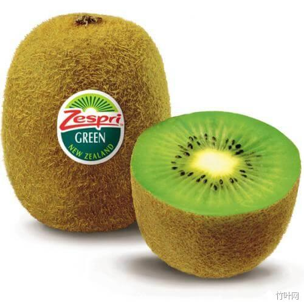
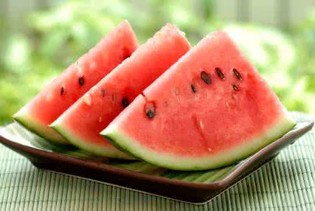
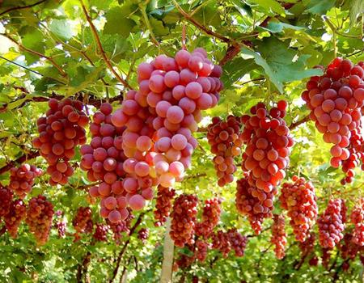

-

熬夜答题记得多吃水果哟
既然提到了水果，那么我们就不得不提的一个水果。被称为“水果之王”的猕猴桃。
猕猴桃有这么大的美誉，让我们就一起来探索。猕猴桃在我们的健康和养生之中能够提供什么样的神奇功效呐？
维生素储藏室：
猕猴桃中含有丰富的维生素A、维生素C、维生素E，并含有钾、镁等元素，并且含有胡萝卜素、氨基酸、叶酸、钙
、天然肌醇黄体素等其他水果中很少见的营养成分。与其它含有相同营养元素的水果相比，猕猴桃中的含量都要远高于其它水果，
比如钙的含量是苹果的17倍是香蕉的4倍。维生素C的含量也是远远超过其他水果。因此，猕猴桃被称为“水果之王”也
是当之无愧的。
猕猴桃对治疗糖尿病有一定的作用。有人会疑问，水果都是含有糖的，为什么猕猴桃反而对治疗有一定的作用呐？因为猕猴桃中含有铬，
可以刺激孤立细胞分泌胰岛素，可以降低糖尿病人体内血糖的水平，进而对糖尿病起到治疗的作用。
猕猴桃中含有大量的维生素C，具有较强的抗氧化作用，可以降低人体内胆固醇的水平，起到扩张血管、降低血压的作用。
猕猴桃饮料更是可以治疗坏血病。对我们的健康和疾病治疗具有非常大的食用价值和药用价值。
猕猴桃不紧能起到这些疾病的治疗价值。还具有帮助消化、保护心脏，稳定情绪的作用。这么一种神奇的水果，
平时可要记得吃哟！当然凡事都要讲究度。水果也是要适量食用才能更好的保障我们的健康。
查看详情
-

五月开启吃瓜季
暑天来临，伴随着气温的升高。陪伴我们整个夏天的水果--西瓜到了大批成熟的时候了。对于经常吃西瓜的我们除了知道西瓜好吃之外，对西瓜是否还有更深的了解呐？下面让我们走进这个里外都能吃的西瓜：
1、西瓜最直接的功效就是降温解暑了。因为含有极高的水分。所以天气热了，吃几块西瓜解解渴是多么幸福的一件事。
2、西瓜富含维生素C及钙、磷、铁等矿物质，能够增强皮肤弹性，减小皱纹，对于爱美女性来说这可以说是一记纯天然的美容佳品呀！
3、西瓜种子含有维生素B2，西瓜皮含有维生素C、E。可预防并消除口鼻生疮等症状，最新的发现：维生素B2具有治疗心绞痛 患冠心病、心肌缺血、防治偏头痛、防治癌症等功效。
4、西瓜具有利尿功效，并可解酒毒。因此夏季到了，习惯撸串喝酒的朋友可以多吃些西瓜以保护自身健康。
当然，任何事情都要适当才为最佳。因为西瓜含有很高的糖分，因此患有糖尿病的患者应尽量减少西瓜的使用。
喜欢的小伙伴记得点赞分享哟！！！！！！！！！！
查看详情
-

吃葡萄不吐葡萄皮
夏季来临，又一个香甜可口的水果成熟了，那就是葡萄。这期我们就和大家一起探索葡萄的奥秘和葡萄能给我们的健康带来哪些好处呐？
通常情况下人们吃葡萄都是吐葡萄皮的，也会把葡萄籽儿给吐了。其实葡萄皮和葡萄籽儿是含有非常丰富的营养成分，
1、葡萄皮中含有天然色素可促进人体内糖类的分解，可以避免高血糖的发生；
2、葡萄皮中还有黄酮类物质，可以防治心血管疾病：如降血脂，降血糖，舒张血管的作用；
3、葡萄皮中含有更丰富的白藜芦醇，这种物质可预防心脑血管疾病并且具有很强的抗癌能力。
葡萄籽中含有多酚类物质，主要的两种是儿茶素类和原花青素类。
1、多酚类物质具有抗氧化清除自由基的功效。可以防治糖尿病、心脏病、癌症等上百种自由基引起的疾病。
2、人体的衰老很大程度上是因为人体的结构组织被破坏。而葡萄籽中含有的抗氧化剂能够保护结构组织不被自由基破坏，因而起到延缓衰老的作用。
3、葡萄籽可以扩张血管，疏通脉络已达到滋润皮肤的功效，并具有消除雀斑和黄褐斑的作用。
由此看来无论葡萄皮和葡萄籽都对我们的健康有很大的价值。因此我们可以做一个“吃葡萄不吐葡萄皮”的人了。但一定记得吃葡萄之前一定要清晰干净哟！
查看详情
-
旅行-诗和远方
旅行不仅是身体去了一个遥远的地方。更多时候而是心灵去了一个遥远的地方。
因为生活节奏的加快，工作压力的增大。我们去旅行往往忘记了旅行的真正意义。
我们总是赶着时间去到达一个目的地，到了之后又赶紧的拍照，赶紧的逛完所有的景点。
我们似乎一直在赶时间，却忘记了，沿途的风景和行走的每一步才是旅行的意义。
有时风景和旅行就在我们身边。一片落叶，我们看到了秋去冬来的四季变换；一条小溪，
让我们感受到了时间的流逝和一区不复返；一座彩虹桥，带我们领略雨后天晴是多么的喜悦和轻松；
一朵小花，告诉了我们这是个五彩斑斓的世界。
生活很辛苦，记得给自己的心灵放个假。去享受一下生命，去感受一下大自然给我们的恩赐。
查看详情